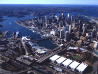

Stay Connected
|
|
Wiki |
|
|
Mailing
list
|

|
Flickr |
|
|
Twitter feed |
Press Releases |
|
| 1. Feb 2008 | |
| 2. May 2008 | |
| 3. Jan 2009 | |
| 4. Jan 2009 | |
| 5. Feb 2009 | |
Hosted by

The Open Source Geospatial Foundation (OSGeo) has been created to support and build the highest-quality open source geospatial software. The foundation's goal is to encourage the use and collaborative development of community-led projects, data development and education.
Charging Station Sponsor

Bronze Sponsors

Media Sponsors

|

|

|

|
Venue – Sydney Convention & Exhibition Centre (SCEC)
 FOSS4G 2009 will be held at the Sydney Convention and Exhibition Centre (SCEC), Darling Harbour. This large purpose-built facility, is set in 50 hectares of parks, gardens, museums, shopping malls and amusement areas. Nestled on the shores of Darling Harbour, the venue has magnificent views of the city and is only a short walk to several attractions. Next to the Convention Centre is the Harbourside shopping and restaurant complex.
Download Darling Harbour Map
(PDF, Size: 411KB)
Contact Us |
||
|
|
Postal
|
Phone and Email
|
|
|
||